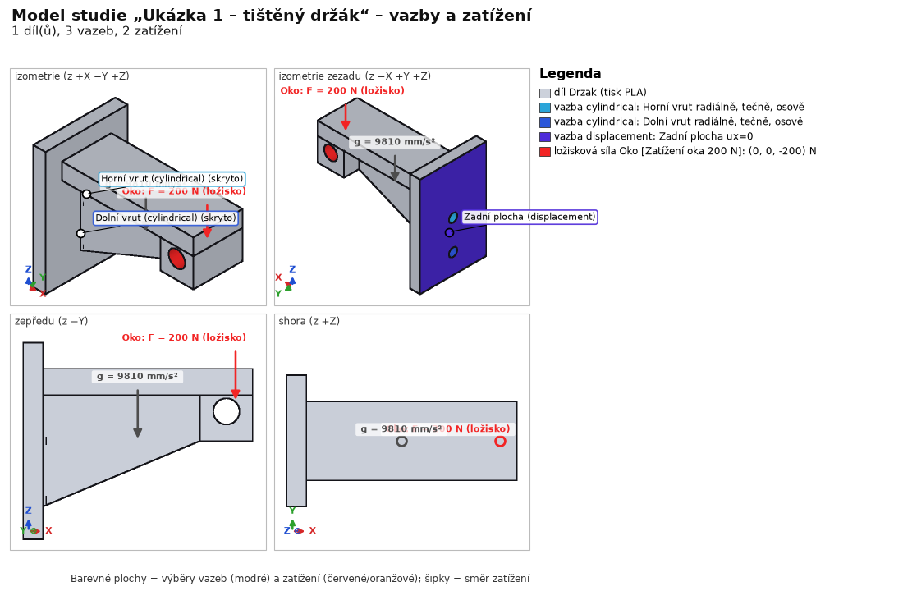
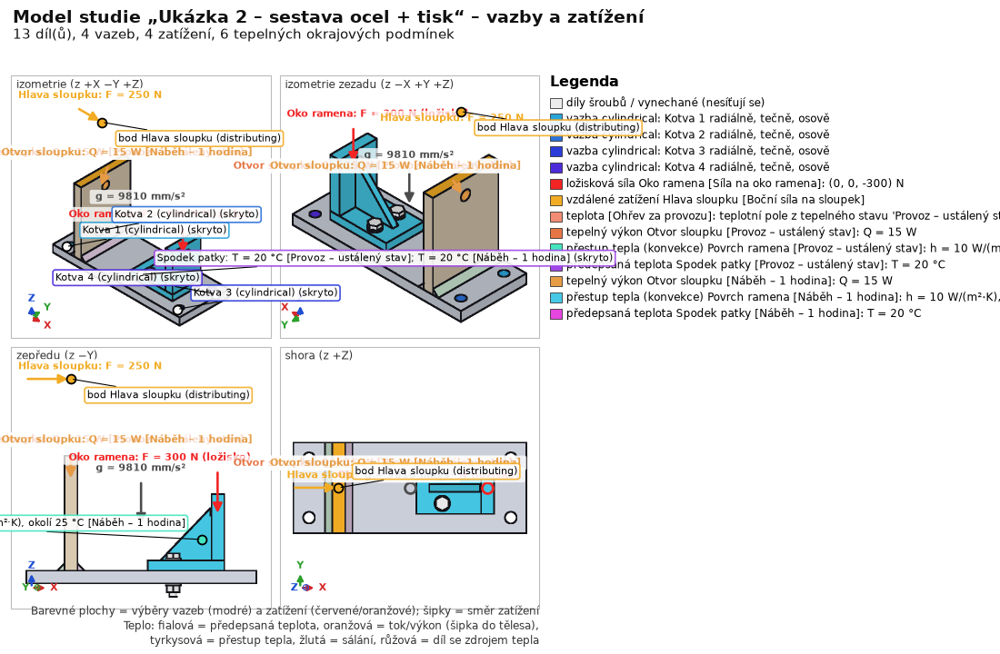
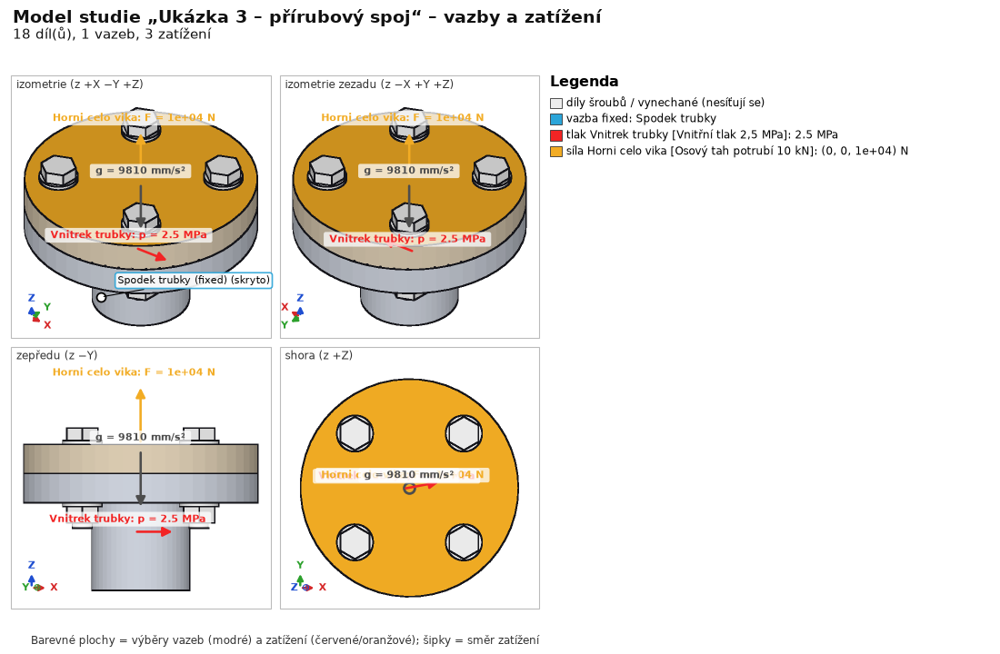
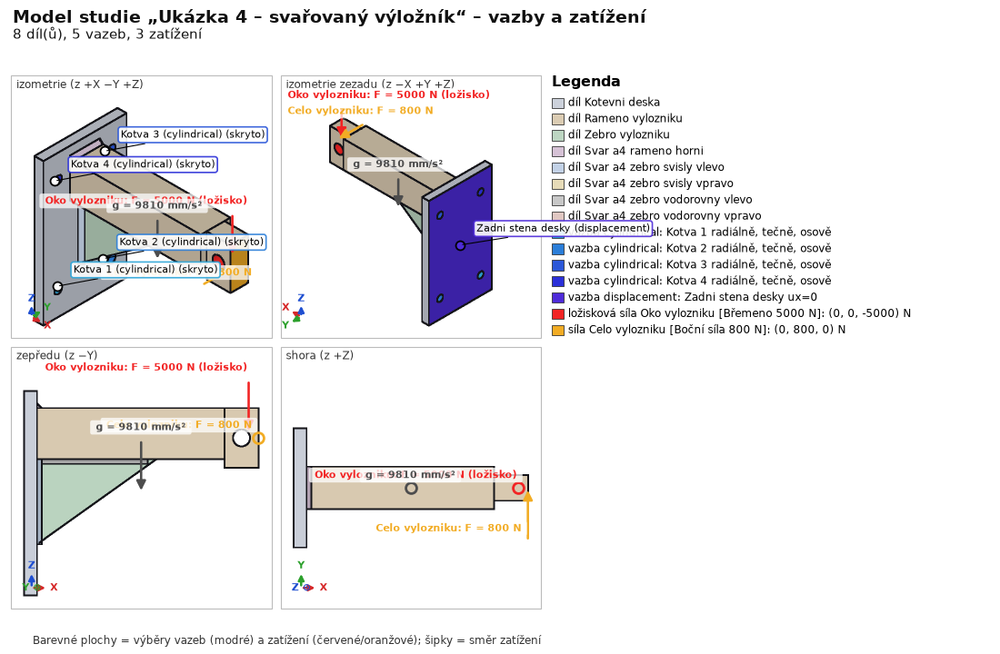
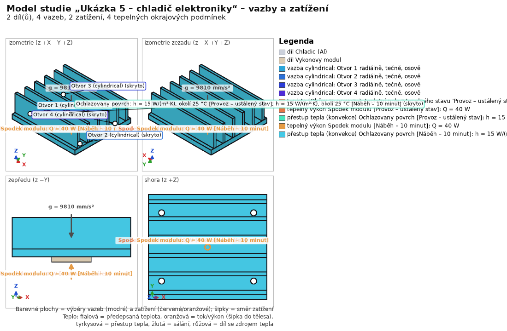
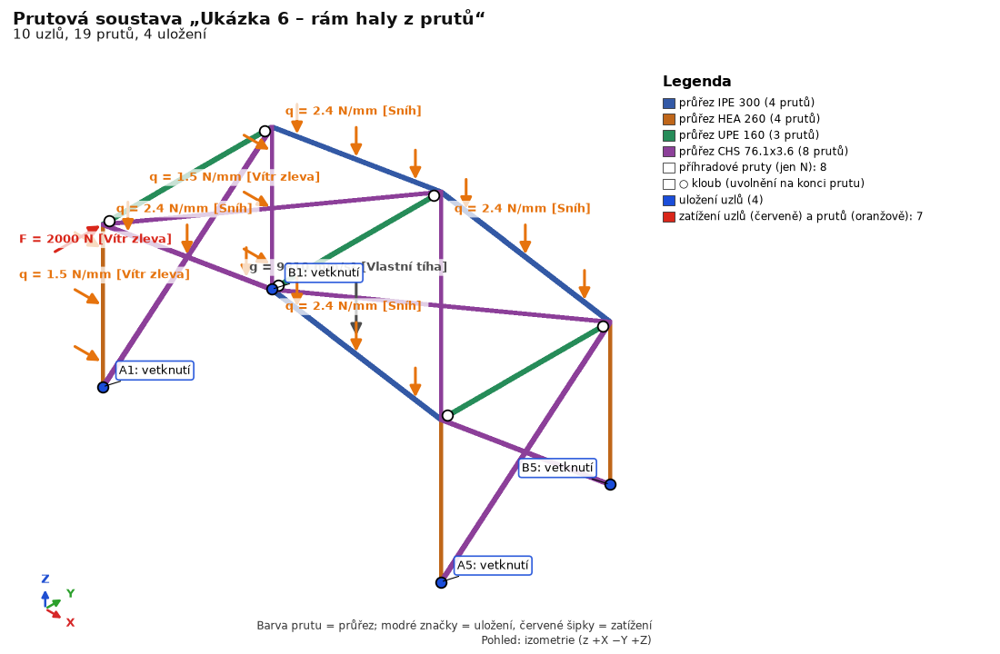
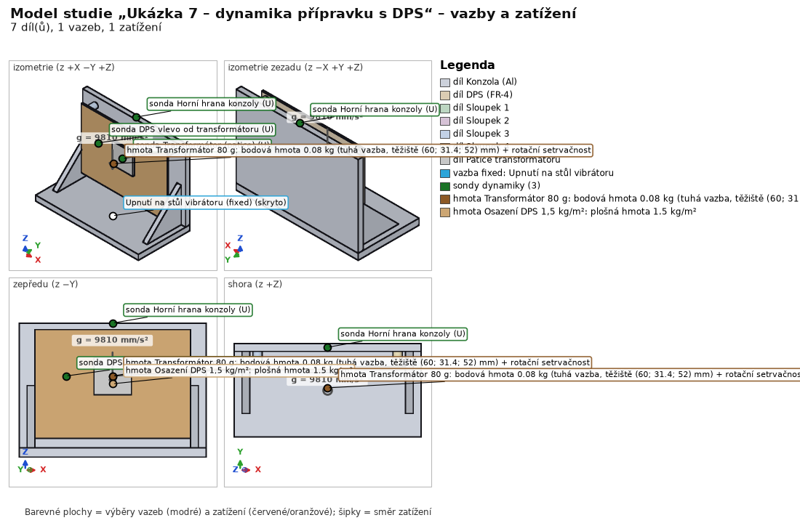
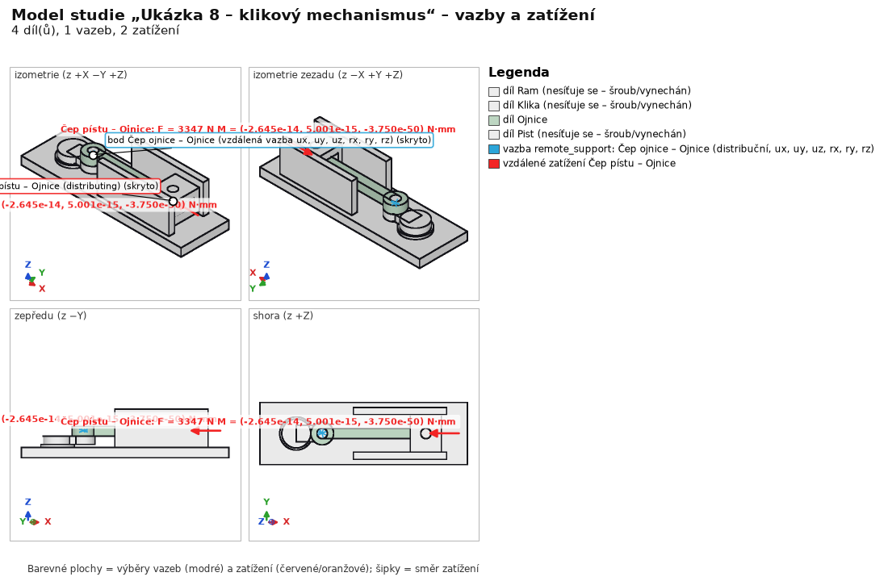
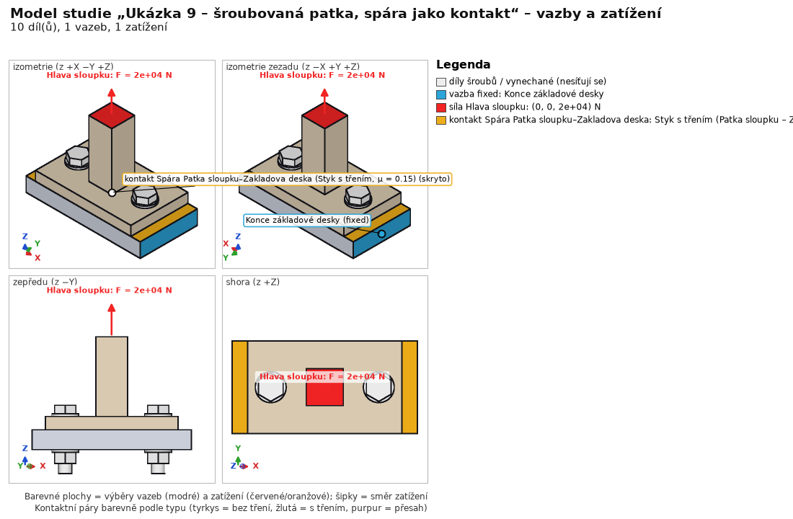
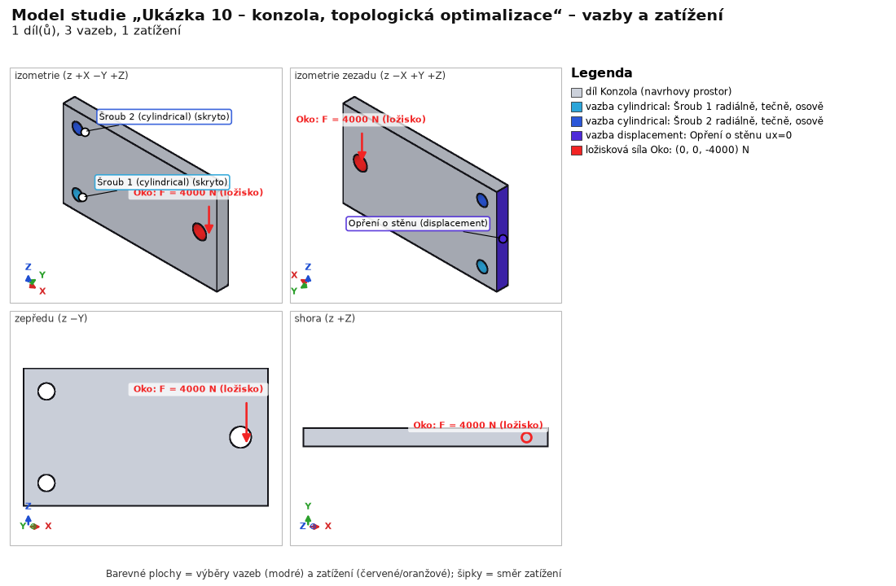

Deset hotových projektů s možnostmi programu. Průvodce je otevře a krok za krokem vysvětlí, co je zadáno a proč.
Průvodce je panel vpravo: Ukaž v programu přepne program do stavu, o kterém krok mluví, Další / Zpět listuje kroky, Nápověda ke kroku otevře podrobnou stránku. Mezi kroky můžete s programem libovolně pracovat.
Tip: průvodce otevírá kopii ukázky v %LOCALAPPDATA%\FEAStudio\ukazky; Ctrl+S originál nepřepíše.
Bez průvodce: Ctrl+O → složka examples v instalaci → example1_bracket.fea až example10_bracket_topology.fea.
Držák z PLA (Bambu Basic), směr stavby Z: svislá deska 60×40×6 mm se dvěma dírami Ø5 pro vruty, vodorovné rameno 64×24×8 mm a na jeho konci výstupek s okem Ø8 (ložný čep) a trojúhelníkové žebro.

| Krok | Zadání |
|---|---|
| Materiály | Tisk PLA Bambu Basic (E 2680 / E_z 2160 MPa, Rm 39 / Rm_z 35 MPa) |
| 3D tisk | stavba Z, vrstva 0,2 mm, linie 0,42 mm, 3 perimetry, 5/3 plné vrstvy, gyroid 20 %; Tsai-Wu; tečení 1000 h při 30 °C pro stav Zatížení oka |
| Vazby | válcová vazba každé díry pro vrut (Horní vrut, Dolní vrut), zadní plocha ux = 0 |
| Zatížení | Zatížení oka 200 N (ložné zatížení dolů); Vlastní tíha |
| Síť | 2,5 mm, tet10 |
| Únava | sinus 0–1 × Zatížení oka (pulzující 0–200 N), 100 000 opakování |
Ocelová patka 180×70×10 mm (S235) se 4 kotevními dírami Ø9, sloupek 10×70×90 mm přivařený dvěma koutovými svary a4 a na patce vytištěné rameno PLA přišroubované 2× ISO 4017 M6 x 30 - 8.8 s podložkami ISO 7089 a maticemi ISO 4032.

| Krok | Zadání |
|---|---|
| Materiály | Ocel S235 (výchozí), rameno Tisk PLA Bambu Basic |
| 3D tisk | rameno: 3 perimetry, gyroid 25 %, tečení 2000 h / 30 °C pro Síla na oko ramena |
| Spoje | 2 šrouby M6 8.8 s automatickým předpětím (stav Předpětí šroubů); 2 koutové svary a4 (posouzení EN 1993-1-8, únava kořene a paty) |
| Vazby | válcová vazba 4 kotevních děr |
| Teplo | 15 W do díry sloupku; konvekce ramene 10 W/(m²·K) na 25 °C; spodek patky 20 °C; ustálený stav a přechodový náběh 1 h |
| Zatížení | Síla na oko ramena 300 N (ložná); boční síla 250 N na sloupek v bodě [35; 35; 150]; Vlastní tíha; Ohřev za provozu (teplotní napětí z ustáleného stavu) |
| Síť | 4 mm; místní zjemnění oka ramena 1,5 mm |
| Únava | dva sinusové kanály posunuté o 90° (neproporcionální zatížení), 200 000 opakování |
Tlakové potrubí Ø50/36 s přivařenou přírubou Ø120 a plným víkem, spojené 4× šroubem ISO 4017 M10 × 45 8.8 s podložkami a maticemi. Ověřuje výpočet předpětí a posudek šroubového spoje podle VDI 2230.

| Krok | Zadání |
|---|---|
| Materiály | Ocel S355 (výchozí pro přírubu a víko) |
| Spoje | 4 šrouby M10 8.8 s automatickým předpětím (utahovací faktor alpha_A = 1,6, součinitel tření μ = 0,12) |
| Vazby | pevné uložení na spodním čele potrubí |
| Zatížení | vnitřní přetlak 2,5 MPa na vnitřní válec potrubí; osový tah potrubí 10 kN na horním čele víka; Vlastní tíha; Předpětí šroubů |
| Síť | 5,0 mm, tet10 |
| Posouzení | VDI 2230: montážní předpětí, utahovací moment, bezpečnost proti kluzu a proti rozevření spáry |
Svařovaný konzolový výložník: kotevní deska se 4 dírami Ø13, vodorovné rameno 50×60 o délce 220 mm s okem pro ložný čep 5000 N, trojúhelníkové výztužné žebro tloušťky 12 mm a 5 koutových svarů a4.

| Krok | Zadání |
|---|---|
| Materiály | Ocel S355 (výchozí) |
| Spoje | 5 koutových svarů a4 (rameno k desce nahoře, svary žebra k desce a k rameni) |
| Vazby | válcová vazba 4 kotevních děr; zadní stěna kotevní desky ux = 0 (opřená o zeď) |
| Zatížení | břemeno 5000 N v oku (ložné zatížení); boční síla 800 N na čele ramene; Vlastní tíha |
| Síť | 6,0 mm, tet10 |
| Únava | cyklické zdvihání 0–5 kN (200 000 cyklů) posunuté proti boční síle; IIW a EN 1993-1-8 |
Žebrovaný hliníkový chladič 90×80×30 mm se 6 žebry a nerezový výkonový modul 30×30×4 mm s výkonovými ztrátami 40 W.

| Krok | Zadání |
|---|---|
| Materiály | Hliník EN AW-6082 T6 (chladič, k = 170 W/(m·K)); nerez 1.4301 (modul, k = 15 W/(m·K)) |
| Vazby | válcová vazba 4 montážních děr Ø4,5 mm |
| Teplo | ztráty 40 W do modulu; přirozená konvekce h = 15 W/(m²·K) na žebrech k okolí 25 °C; ustálený stav a přechodový náběh 10 minut |
| Mechanika | Ohřev za provozu (teplotní pole z ustáleného stavu způsobí ohyb bimetalu a napětí); Vlastní tíha |
| Síť | 4,0 mm, tet10 |
Ocelová hala jen z prutů (studie bez geometrie STEP): dva rámy, vaznice a ztužení. Výsledky se v ukázce neukládají – spočítají se za několik sekund.

| Krok | Zadání |
|---|---|
| Pruty | sloupy HEA 260, vazníky IPE 300 (rozpětí 12 m, sedlová střecha), vaznice UPE 160 kloubově, ztužení CHS 76.1×3,6 (jen osová síla), vetknuté paty sloupů; posudek EN 1993-1-1 (délky vzpěru sloupů) |
| Zatížení | Vlastní tíha; sníh 0,8 kN/m² na vazníky; vítr zleva na sloupy + 2 kN ve štítu |
| Řešení | statika + 6 vlastních frekvencí (1. ~4,8 Hz) |
Hliníkový držák upnutý na vibrační stůl, deska plošných spojů FR-4 100×70×1,6 mm na 4 mosazných distančních sloupcích Ø6, transformátor 80 g a osazení desky.

| Krok | Zadání |
|---|---|
| Materiály | Hliník EN AW-6082 T6; mosaz CuZn39Pb3; vlastní „DPS FR-4 (orientačně)“ (E 22 GPa, ρ 1 900 kg/m³) |
| Vazby | pevná spodní plocha základny (= buzená základna) |
| Dynamika | bodová hmota 80 g s rotační setrvačností (tuhá vazba na patku); plošná hmota 1,5 kg/m² na desce; 20 módů, ζ = 3 %; harmonické buzení sinus 1 g ve směru Y 10–2 000 Hz; náhodné vibrace ASD 20 Hz 0,008 → 50–500 Hz 0,02 → 2 000 Hz 0,005 g²/Hz (4,8 grms, 0,5 h, Dirlik) – PŘÍKLAD ve struktuře IEC 60068-2-64, ne hodnoty z normy; sondy na patce, desce a držáku |
| Síť | 6 mm, 3 mm u desky (místní zjemnění), tet10, 32 tis. uzlů; výpočet asi 1 min |
Rám s ložiskem a vedením; klika r = 25 mm, ojnice l = 100 mm, píst (posuvník); motor 3 000 ot/min, plynová síla 3 000 N.

| Krok | Zadání |
|---|---|
| Materiály | Ocel C45 +N (rám, klika, píst); ojnice Ocel 42CrMo4 +QT |
| Pohyb | 4 tělesa (pevný rám); 3 rotační klouby navržené z geometrie – čepy ojnice změněny na kulový + kardanový (nepřeurčená sada); posuvné vedení pístu; pohon konstantní úhlovou rychlostí 314,16 rad/s; síla 3 000 N na píst; tíha; kinematika 1 otáčky, 121 výstupů |
| Převod do MKP | okamžik maxima reakce v čepu pístu → zatěžovací stav ojnice: vzdálené zatížení na oko B, setrvačnost (Inertia), oko A na rozdělovací vzdálené podpoře (odlehčení setrvačností); rám, klika a píst vynechány z MKP |
| Síť | 2 mm, jen ojnice |
Patka sloupu 100×60×10 s průřezem 24×24 na základové desce 120×60×15, 2× ISO 4017 M10 × 45 8.8 s podložkami a maticemi.

| Krok | Zadání |
|---|---|
| Spoje | 2 šrouby M10 8.8, automatické předpětí (VDI 2230) |
| Kontakty | spáry šroubových spojů jako kontakt s třením μ = μ_T = 0,15 (penalta K = 10·E); nelineární výpočet jako posloupnost kroků: předpětí šroubů → tah 20 kN |
| Vazby | základová deska pevně na koncích x = ±60 |
| Zatížení | tah 20 kN na horní část sloupu (z = 70) |
| Síť | 6 mm, tet10, konformní síť s rozpojenou spárou |
Plný ocelový plech 160×90×12 mm (S235) jako návrhový prostor konzoly: dvě díry Ø11 pro šrouby M10 do zdi (x = 15 mm, z = 15 a 75 mm) a oko Ø14 na volném konci (x = 142 mm, z = 45 mm). Topologická optimalizace odebere málo namáhaný materiál a ponechá tvar, který při daném objemu nese zatížení.

| Krok | Nastavení |
|---|---|
| Materiály | Ocel S235 (izotropní pružný materiál – požadavek topologické optimalizace) |
| Vazby | válcová vazba děr Šroub 1 a Šroub 2; plocha Podpora u zdi ux = 0 |
| Zatížení | stav Zatížení 4 kN – ložné zatížení v oku, dolů |
| Síť | 4 mm, tet10 |
| Výsledky | statika celého návrhu a výsledek optimalizace (veličiny Topologie – hustota, Topologie – výsledný tvar) |
| Topologie (BESO) | cíl 40 % objemu, filtr R 8 mm, ER 4 %/krok, nejvýše 60 iterací, všechny výběry chráněny (díry, oko, podpora u zdi); popis v Výsledky – Topologická optimalizace; výsledek: 40 iterací, objem 40,0 %, poddajnost 2,2× celého návrhu |
Ukázky vytvoří skript (geometrie přímo v Pythonu přes OCCT, výpočet přes jádro programu):
.venv\Scripts\python.exe -m examples.create --solve .venv\Scripts\python.exe -m examples.create --solve --only 8 (jen jedna ukázka) .venv\Scripts\python.exe -m examples.create --solve --only 10 (ukázka 10: topologie, desítky běhů ccx) .venv\Scripts\python.exe -m examples.frames (ukázka 6)
Bez --solve se uloží jen vstup. Skript examples\create.py je i šablonou pro stavbu studie z Pythonu – viz Automatizace.